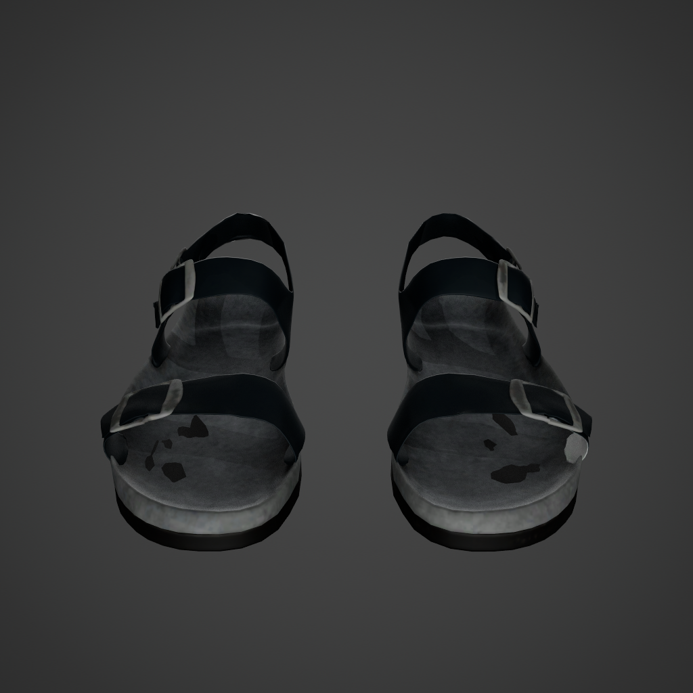

通过服务器 HTTP 页面查看；media/ 是只读原文件符号链接，下载单个 HTML 不包含视频。拖动页面横向查看全部输出。
合成数据 UE
ue:26804 · wardrobe
Using the provided source video, apply the following edit: Please replace the person's entire outfit with the following items shown in the reference images: the top, the bottoms, and the footwear. Remove any original clothing or footwear that is not part of this target outfit. Keep all non-clothing attributes unchanged.
3. garment / front4. garment / back5. garment / front

6. garment / back
官方基座Step 50Step 256最终 Step 682
ue:31236 · action
Using the provided source video, apply the following edit: I'd like to change the person's action to the one demonstrated in the reference video. Follow the movement shown in the reference video while retaining the current person's identity, hairstyle, hair color, clothing, and expression. Leave the scene and camera unchanged.
Using the provided source video, apply the following edit: I'd like to replace the video's scene with the environment shown in the reference image. Keep the person's identity, hairstyle, hair color, clothing, expression, and action unchanged. Preserve the camera framing and movement, while adapting the lighting on the person to the target environment.
Using the provided source video, apply the following edit: Please replace the person in the video with the person shown in the reference photo. Only use the reference photo to determine the target person's facial identity and skin tone. Apply that skin tone consistently to the face and body, while retaining the current hairstyle, hair color, clothing, expression, action, scene, and camera.
Using the provided source video, apply the following edit: Please switch the camera setup to an upper-body shot from a front three-quarter angle. Change only the camera setup. Preserve the person's appearance, expression, and action, along with the existing scene.
Using the provided source video, apply the following edit: Please change the person's action to match the reference video. Use the reference video only for the action. Keep the person's identity, appearance, expression, scene, and camera unchanged.
Using the provided source video, apply the following edit: Please restyle the person's hair according to the reference images. Use the reference images only for the hairstyle. Keep the person's identity, hair color, clothing, and all other aspects of the current video unchanged.
Using the provided source video, apply the following edit: Please switch the camera setup to an upper-body shot from the front. Retain the same person, hairstyle, hair color, outfit, expression, and action in the same environment. Only change how the camera captures the scene.
1. Restyle the cluttered wooden workbench area and shelves behind the man into a ghibli style.
2. Replace the beige newsboy-style cap worn by the man with a bright red baseball cap.
1. Add a black desktop microphone at the wooden desk surface to the right of the man's hands.
2. Remove the gray blazer worn by the man.
3. Replace the green wall with white lines behind the man with a plain blue wall.
1. Replace the green polo shirt worn by the man in the center with a red t-shirt.
2. Replace the workshop background behind the man and equipment with a plain white wall.